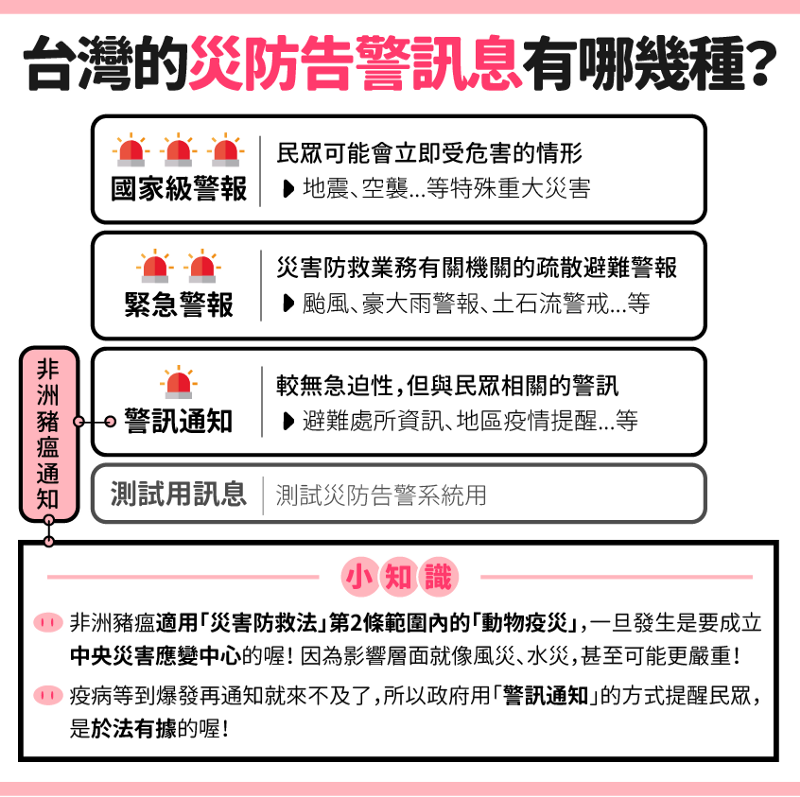
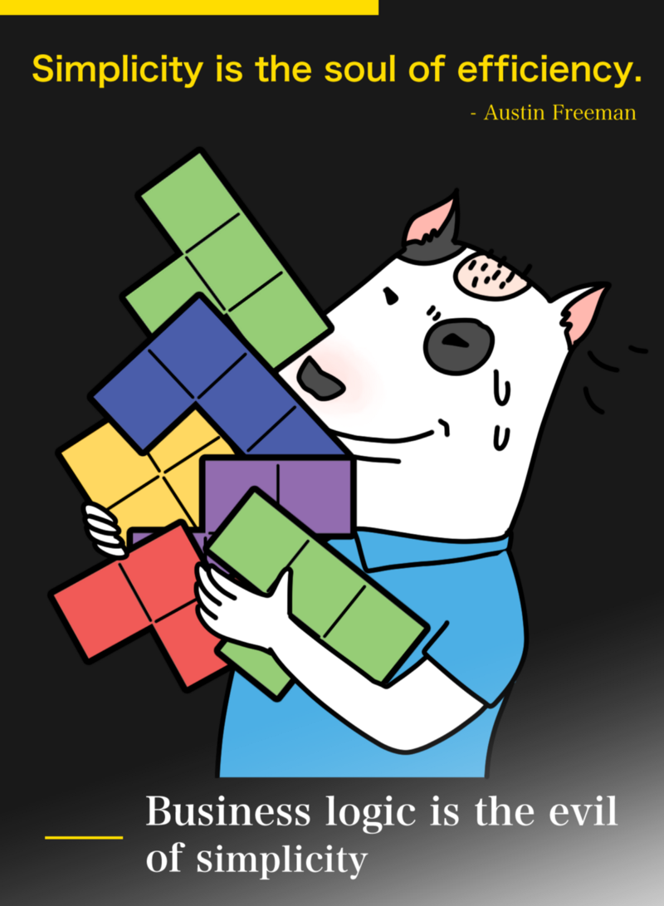
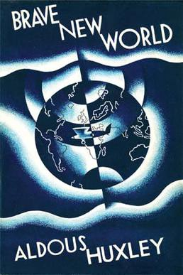
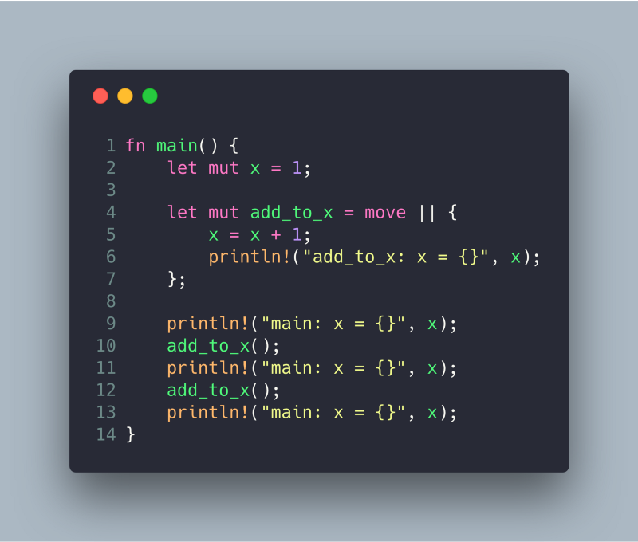

記錄我每週的所見所聞
這是什麼奇怪的標題？
搞笑諾貝爾獎官方說，會這樣定的原因是因為他們認為「每一年都是一個新的開始」。 —《那些關於搞笑諾貝爾獎的二三事》
致敬搞笑諾貝爾獎，希望每一篇文章都是都是新的開始，但也能牢記初衷。
新聞
防疫升級！40 天驗出 5 起非洲豬瘟病毒 首度發送國家級警報
臺灣最近最重要的新聞大概是「非洲豬瘟」的疫情了。2018/12/12，防檢局透過災防告警細胞廣播服務訊息發送系統 PWS，首次廣播防疫通知。
我收到的當下，心中想到的第一個問題是：防檢局可以透過 PWS 發送通知嗎？臺灣開始使用 PWS 時，有媒體整理他國的 PWS，多是用在地震、海嘯、森林大火等「緊急危難」，翻成白話文就是：收到通知如果你/妳還不跑就會死翹翹了，而豬瘟本身並沒有收到通知後再不跑就死翹翹的問題。
後來我看到 農藝女孩看世界 一篇文章，才知道防檢局使用 PWS 發送防疫通知，於法有據，也讓我對於臺灣的 PWS 種類以及適用範圍有了新的認知。

取自 《農藝女孩看世界》
依據《災害防救法》與《災防告警細胞廣播訊息申請作業程序 107 年修正版》，防檢局的確有權力發送 PWS 通知。然後根據國家傳播委員會的說明，PWS 的訊息時會發出特殊的告警聲響及振動，該功能在 iOS 上似乎只能完全關閉訊息的接收，沒有辦法只關閉聲響及震動。
會想要爬這一堆條文，是我在收到當天問了一個問題：
有人也收到了嗎？這個算不算防檢局濫用緊急線路啊？ 🤔
我必須承認我的語言能力必須要再加強。事後想一想，這一句話很容易被認定為「我覺得其實非洲豬瘟沒有那麼嚴重，防檢局是小題大做」，然後底下就是一堆類似「我知道這件事，這件事真的很嚴重，政府幹得好」的回覆。
但我的問題其實是防檢局有沒有權力送 PWS 通知。我希望得到的回答是「其實不算濫用耶，因為法律有授權防檢局使用 PWS 發送防疫通知」。回頭看看防檢局的公告，也沒有提到究竟哪條法律授予了防檢局發送 PWS 通知的權力，而是動之以情，「災害影響層面恐不下於風災水災」，其實不是很能夠說服我。
「依法行政」，現在聽起來快變成口號的幹話，其實是政府施政時必須牢記在心的至高原則。PWS 是工具，只要是工具就會有被濫用的可能。只有寫明遊戲規則，大家都照遊戲規則去走，政府跟人民才能省下為了防堵被對方背刺的精力，攜手經營這個國家。
🙏 最後當然是為臺灣祈禱，能夠在這一場疫災中全身而退。 🙏
三個混亂：混亂的物聯網｜混亂的文書編輯軟體｜混亂的胸罩
這一週的科技島讀以三個混亂為標題寫了一篇文章，我都覺得很有意思。其中最有意思的當屬〈混亂的文書編輯軟體〉：
第一，針對單一的使用情境。它們「拆分」（unbundle）了 Word 或是 Excel。例如 Quip 一開始針對條列式文件與純文字。Airtable 強調文字表格而不是 Excel 強調的數字報表。Trello 則是用卡片的介面管理專案。
我想要從反面去思考這個問題：為什麼 Word 會落到被拆分、取代的下場？
以 Evernote 為例，有一段時間加入了大量與協作有關的功能，對於身為個人使用者的我根本沒有可以使用的場景。它愈來愈複雜，bug 愈來愈多，例如刪不掉的鬼 tab 就遲遲沒有修復。我可以理解這是因為 codebase 愈來愈大，修起來動輒得咎，可能鬼 tab 修掉了，同步功能就壞掉了。
那為什麼一開始不要堅持維持幾個簡單的功能就好了呢？
公司要成長，要嘛吸引更多的使用者，要嘛提升現有使用者的黏著度。隨著現有使用者在產品上累積的資料愈來愈多，他們就會想要有更多方式來使用這些資料。接下來就是開發者把功能生出來，然後 codebase 就會愈來愈大，最後超過開發團隊所能夠掌握的臨界點，產品的開發速度就慢下來了。
當然也有打死就是不新增新功能的例子，例如 Pinboard、Prerender、Pushover，那使用者就只有最核心的死忠粉絲，雖然餓不死但也不會成長。

取自 DOG COM
軟體開發跟做人一樣，答應一件事往往很簡單，拒絕一件事卻需要千言萬語。好像只有拒絕別人的告白不需要理由 🤔
題外話，我很好奇有沒有所謂的 軟體工程經濟學，探討一些開發者與消費者或開發者與非開發者（例如 PM、業務）之間的關係，例如開發團隊邊際成本與使用者邊際效益的互動方式，那一定很有趣。
聽書：美麗新世界

source: Wikipedia
在未來，人類被分為五等，每一等出生時都被賦予了特定的使命與地位。人人適得其所，安居樂業，社會穩定。直到有一天，主角在世界之外走失，安頓下來、懷孕，最後帶著孩子回到了自己的世界，從此拉開了 這個孩子 與整個世界衝突的帷幕。
心得
第一眼看到美麗新世界 Brave New World，想到的是文明五 Sid Meier’s Civilization V 的資料片美麗新世界 Brave New World。
餵狗，發現官方自己也承認資料片的名稱是取自這本書。
34:20 ~ 34:45
So it’s at this point that I was starting to really think about the ideology system, and figure out how the conflict between communism, fascism and the democratic people was gonna play out. I start thinking about kind of literature we were putting great works in, so I started thinking about that literature of the early 20th century period and Huxley’s Brave New World came to mind.
- Civilization V Retrospective: The Complete Edition, Firaxicon 2015
取自 Reddit
其實該資料片跟 Brave New World 並沒有太多直接的關連，主要是因為開發者在發想遊戲的名稱時，從歷經大幅調整的意識形態系統 ideology system 出發，聯想到三種意識形態碰撞、衝突的 20 世紀初，再聯想到同時代成書的美麗新世界，就此拍板。
身為工程師，我很能體會想名字時的痛苦啊！
真要說直接的關連，遊戲有一項成就提到了小說的致幻劑 Soma：
Soma Tablets for Everyone
Reach a Happiness level of over 100 for your civ.
- Achievements, Civilization 5: Brave New World Wiki Guide
取得成就的方式是玩家的文明達成 100% 的幸福度，根本是小說的翻版。
小說中出現一種致幻劑，說書所附的文稿將其翻譯成「梭麻」。為了避免翻譯失真，我特地去查詢原小說中該致幻劑的原名。致幻劑的名字叫做 Soma，查到之後我的背後冒出陣陣冷汗，因為我立刻想到有一款恐怖潛行遊戲就叫做 SOMA。
這一套遊戲的故事與激發的反思非常精彩，日後有機會再跟大家分享。
後來想一想，美麗新世界問世後，似乎像是鬼影一樣，在後來的歷史中反覆出現。例如小說中「集體生育」所影射的優生學，大部分人立刻想到的可能是納粹的生命之泉 Lebensborn，但在 1920 年代的美國，實際上也發生過類似的事件 — — 當基因成為控制社會的工具：1920 年代美國優生運動下，一場最終執行強制絕育的判決。
小說中的集體思想，在日後的歷史也頻繁出現。共產主義、法西斯主義的集體思想我們在國高中的教科書中都已經看到膩了，但有多少人知道，美國也出現過非常接近集體思想定義的麥卡錫主義？
一個幽靈，美麗新世界的幽靈，直到 21 世紀還在人類的文明上遊蕩。
Meetup：Rust Meetup - Iterators and Closures
一切都是從 closure 的範例開始的：

Rust Playground Basic Closure Example - play.rust-lang.org
可以發現 closure 內的 x 遞增，為什麼？
接下来我们研究一下 closure 背后的原理。Rust 目前的 closure 实现，又叫做 unboxed closure，它背后的原理与 C++ 11 的 lambda 非常相似。当一个 closure 创建的时候，编译器实质上帮我们生成了一个匿名 struct，通过自动分析 closure 的内部逻辑，决定该结构体包括哪些数据，以及这些数据该如何初始化。—《闭包》
交叉查證 Rust 的文件，可以查到以下這一段話：
The
|| {}syntax for closures is sugar for these three traits. Rust will generate a struct for the environment, impl the appropriate trait, and then use it.
當天還有到底在什麼情況下會用到 FnOnce 的討論，但我個人認為最後沒有得出什麼結論，因此就沒有記錄下來了。
研討會：Kubernetes 進階工作坊
簡述
其實就是賣藥大會，Google 推銷自家跟 Kubernetes 有關的產品，而這次推銷最大力的莫過於 Stackdriver。在進到我現在服務的這家公司不久之後（2017 年 4 月），我就試用過 Stackdriver，那時候是出奇的難用。後來雖然聽說 Stackdriver 改版了，但我也沒有那個動力再去試用了。
直到這個星期一，耐著性子把賣藥聽完，覺得 Stackdriver 跟我古早時代試用它的時候差異已經不可同日而語了。加上現在使用的 Papertrail 跟 Stackdriver 相比明顯沒有任何進步，後端人員跟管主機的使用起來哀鴻遍野，之後應該會考慮棄用 Papertrail 轉投 Stackdriver 的懷抱。
簡單整理一下現在使用 Papertrail 遇到的問題：
- 價格非常貴，以我們用最兇的 log、8 GB 來說，Papertrail 就要 75 美金，而 Stackdriver 只要 4 美金。
- 只能搜尋兩週內的 log，更早的 log 就要下載封存後的檔案在自己的電腦上用工具查詢，浪費時間。
工具：webextension-toolbox
最近有一位同事想要開發一個在血庫存量低下的時候，提醒大家捐血的 Chrome extension，我就推薦了他這套 toolbox。
會發現這一套是因為之前開發過一套 Chrome extension Awesome Stars，使用的是 generator-chrome-extension-kickstart。後來作者放棄維護了，推薦大家改用 webextension-toolbox。
如果有寫過 React 的小夥伴，可以把它想像成是 Web extension 的 create-react-app。之所以是 “webextension”-toolbox 而不是 “chromeextension”-toolbox，是因為這一套 toolbox 也支援 Firefox extension，當然 API 的相容性開發者自己要注意。
段子：活得夠久也是一種競爭力
簡述
莫札特活在客戶以宮廷貴族為大宗的年代末尾，卻沒有活到市民階級對音樂大量需求的年代，落得窮困潦倒的結局 — — 所以活得久也是一種競爭力。
心得
很久很久以前曾經跟我爸討論過這個問題，不過那個時候是因為他剛看完 The Titan (2018) 這部電影。問題很簡單：人活那麼久幹嘛？
我爸的觀點是人不用活的那麼久，而且正因為沒有辦法活的那麼久，所以人生才有意義。換句有經濟學風味的話說，正是因為人生有限，才顯得稀缺；正因為稀缺，人才會珍惜。
我的觀點是，人如果可以永生，那麼星際旅行就不用再分腦力、時間去思考延續人類生命的機制了，無論是冷凍冬眠或是跨代飛船 generation ship。研究人員可以把精力投注到諸如探索更多的適居行星，或是其他我們還沒有探尋的前沿領域。
人類從一開始就是永生的生物，或是人類是從 2018 年才開始得到永生；是環境突變導致人類就地永生，還是利用技術得到永生，兩兩排列組合會得到截然不同的結果和歷史走向，這裡就不攤開來討論了。
討論到最後，我發現問題可能不是出在人類是否應該得到永生這件事情上，而是人隨著年紀的不同而對於未來懷抱不同的想像 。我覺得人生還有很多的驚喜值得去發掘，我爸卻開始覺得他活夠了。
YouTube：《戰地風雲 5》TTK 和 TTD 這到底在吵什麼？ ► 一個引起社群憤怒的更新！
- TTK = Time to Kill
- TTD = Time to Death
在射擊遊戲裡，TTK 指的是攻擊者殺死對手的時間，參數可能包括攻擊的部位、使用的武器、所需子彈的數量等。TTD 是角色從受到攻擊到死亡之間的時間。我從這一部影片中學到的是：TTK 跟 TTD 不一定相等，其他因素也會影響到 TTK 與 TTD 的平衡。
這部影片的背景是 Battlefield 系列的開發商 DICE，為了解決 Battlefield V TTD 太短，翻成白話文就是「死太快」的問題，在最新的更新（12/12）大幅拉高了 TTK 數值。消息一出，社群不滿，原因如下：
- 修正 TTD 太短有其他的方式，例如調整既有血量、回血速度、護甲等。
- 要調整的應該是導致 TTD 太短的武器，不是全部槍枝都調整。
- 之前 DICE 自己有做過民調，結果顯示大部分的玩家都不希望調整 TTK。
結果是雖然 TTK 跟 TTD 都拉長了，但這也代表要花費更多的子彈才能殺死一個人，結果就是子彈耗盡的速度更快，遊玩體驗跟戰術都會受到影響。
Mozart, Beethoven, Chopin never died, they simply became music.
- Robert Ford, The Bicameral Mind, Westworld